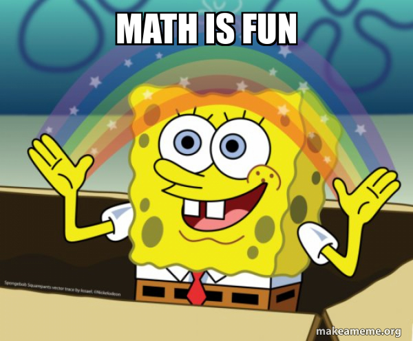

Wozu braucht es diese WEB-API
In JavaScript gibt es verschiedene Möglichkeiten, sich mit seinem Lieblingsthema, der Mathematik, zu beschätigen. Sowohl das Math Object als auch diverse number methods stellen diverse Möglichkeiten bereit, mit Zahlen und Rechnungen zu interagieren. Einige von diesen sollen hier vorgestellt werden:

Number-Methods
Zunächst sollen die Number-Methods in JavaScript näher beleuchtet werden.Die Number-Methods
toString()-Funktion
Die toString()-Methode wandelt ein Object explizit in einen String um, um bspw. die String Methoden verwenden zu können. In diesem Beispiel wird eine Zahl in einen String umgewandelt, um mittels .at() auf die einzelnen Zeichen zuzugreifen.
let a = 234
let firstdigit = a.toString().at(0)
>2
let seconddigit = a.toString().at(1)
>3
let thirddigit = a.toString().at(2)
>4
toExponential()-Funktion
Die toExponential-Methode wandelt eine vorhandene Zahl in die wissenschaftliche Schreibweise mit e um. Mit dem Parameter lässt sich eine Rundung einstellen.
let a = 4.392802894
a = a.toExponential(4)
> 4.3928e+0
toFixed()-Funktion
Die toFixed()-Funktion erledigt zwei Aufgaben gleichzeitig: Sie wandelt eine Kommazahl in einen String um und rundet diese noch auf die im Parameter spezifizierte Anzahl an Stellen nach dem Komma.
let a = 4.23294739487
a = a.toFixed(2)
> "4.23"
toPrecision()-Funktion
Die toPrecision()-Funktion funktioniert so etwa wie die toFixed()-Funktion. Der Unterschied ist, dass der Parameter bestimmt, wie lang der gesamte String sein soll. 5 bedeutet also 5 Zeichen.
let a = 4.443242432
a = a.toPrecision(5)
> 4.4432
valueOf()-Funktion
Mit der valueOf-Funktion ist eine Zahl endlich eine Zahl, und zwar definitiv eine Zahl! Mit dieser Funktion erzwingt man eine Konvertierung eines Objekts zu einer Zahl.
let x = "123";
x = x.valueOf()*2;
> 246
Fazit
Number-Methods sind höchst praktisch, wenn man sich nicht auf die automatische Erkennung des Datentyps durch die JavaScript Engine verlassen möchte und auch, wenn man einfach mal den Datentyp wechseln muss, um bspw. spezielle Methoden zu verwenden oder die Ausgabe in ein bestimmes Format zu bringen.Das Math-Object
Das Math-Objekt ist in JavaScript eine spezielle Art von Objekt, das viele nützliche mathematische Funktionen enthält. Hier sind einige Dinge, die du mit dem Math-Objekt in JavaScript machen kannst:Syntax
Der allgemeine Aufbau der Math-Objects ist Math.method(x)abs(x)
Das Math-Object kann verwendet werden in Kombination mit der Methode abs(x). Es gibt den positiven (absoluten) Wert von x zurück.
Math.abs(-6.9);
>6.9
max(x, y, z, ..., n)
Das max(x,...)-Objekt gibt den maximalen Wert einer Sammlung von Daten zurück. Dies ist ebenfalls auf min anzuwenden. Diese Methode kann in Vermindung mit Arrays sehr hilfreich sein.
Math.max(1, 69, 420, 12, -45, -333);
>420
Math.min(1, 69, 420, 12, -45, -333);
>1
sqrt(x)
Das Math-Objekt kann verwendet werden, um die Quadratwurzel einer Zahl zu berechnen.
Math.sqrt(9);
>3
round(x)
Das Math-Object kann auch standardtisiert runden. Wichtig: Vergesst nicht, dass ihr stehts einen "."und kein "," nutzt!
Math.round(7.6);
>8
Math.round(7.5);
>8
Math.round(7.4);
>7
ceil(x)
Neben dem klassischen Runden, kann es auch nützlich sein nur aufzurunden. Hierbei wird immer zur nächst höchsten Integer gerundet. Hierzu wird ceil(x) genutzt. Eselsbrücke: "ceil" stammt von ceiling = Decke -> also oben.
Math.ceil(2.8);
>3
Math.ceil(2.4);
>3
Math.ceil(2.2);
>3
Math.ceil(-2.2);
>-2
floor(x)
Als Gegenstück zu ceil(x) gibt es noch die "bodenständigere Funktion" (; namens floor(x). Mit diesem Math-Object wird der Integer immer abgerundet.
Math.floor(2.8);
>2
Math.floor(2.4);
>2
Math.floor(2.2);
>2
Math.floor(-2.2);
>-3
random(x)
Wie wir bei Prof. Auch schon lernten: Die random(x) gibt einen zufälligen Wert zwischen [0-1[ aus. Wichtig ist zu beachten, dass 16 Nachkommastellen ausgelierfert werden. Oft wird diese Methode daher mit den Methoden round(x), ceil(x), floor(x) kombiniert und zusätzlich multipliziert mit dem Wertebereich indem du deine zufällige Zahl erhalten willst.
Math.random()
>0.5467894626946024 //Wertebereich 0-1
(Math.random() * 10)+1
>10.876203730527193 //Wertebereich 1-11
Math.floor(Math.random() * 10)+1
>6 //Wertebereich 1-10
Weitere Methoden
| Method | Description |
|---|---|
| acos(x) | Hiermit kann man den Arcus Cosinus von x berechnen |
| acosh(x) | Hiermit kann man den hyperbolischen Arcus Cosinus von x berechnen, was sonst? |
| asin(x) | Erlaubt die Berechnung des Arcus Sinus von x |
| asinh(x) | Hiermit kann man den hyperbolischen Arcus Sinus von x berechnen. |
| atan(x) | Hiermit kann man den Arcus tangens von x berechnen. |
| atan2(y, x) | Berechnet den Quotient von x und y und berechnet damit den Arcus Tangens |
| atanh(x) | Hiermit kann man den hyperbolischen Arcus tangens von x berechnen. |
| cbrt(x) | Berechnet die dritte Wurzel von x |
| ceil(x) | Rundet die gegebene Zahl auf |
| cos(x) | Berechnet den Cosinus von x (Rad) |
| cosh(x) | Berechnet den hyperbolischen Cosinus von x |
| exp(x) | Berechnet e^x |
| floor(x) | Rundet eine Zahl x auf den niedrigeren Integer ab. |
| log(x) | Berechnet den natürlichen Logarithmus (auch ln) von x |
| pow(x, y) | Berechnet x^y |
| random() | Generiert eine Pseudozufällige Zahl zwischen 0 und 1 |
| round(x) | Rundet eine Zahl nach mathematischen Grundsätzen auf den nächsten Integer |
| sign(x) | Gibt zurück, ob eine Zahl negativ oder positiv (oder 0) ist |
| sin(x) | Berechnet den Sinus von x |
| sinh(x) | Berechnet den hyperbolischen Sinus von x |
| sqrt(x) | Zieht die Quadratwurzel von x |
| tan(x) | Berechnet den Tangens von x |
| tanh(x) | Berechnet den hyperbolischen Tangens von x |
| trunc(x) | Schneidet die Nachkommastellen ohne Rundung ab und gibt den integer zurück |